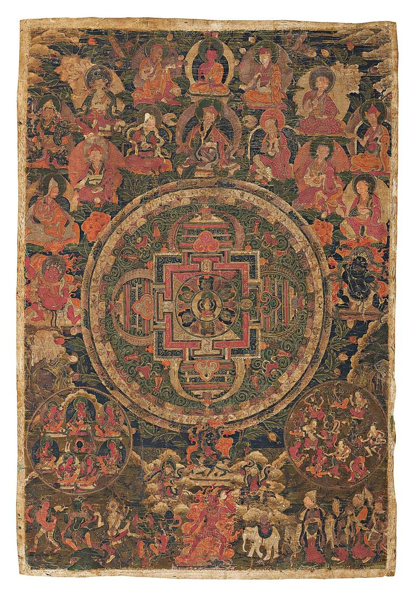
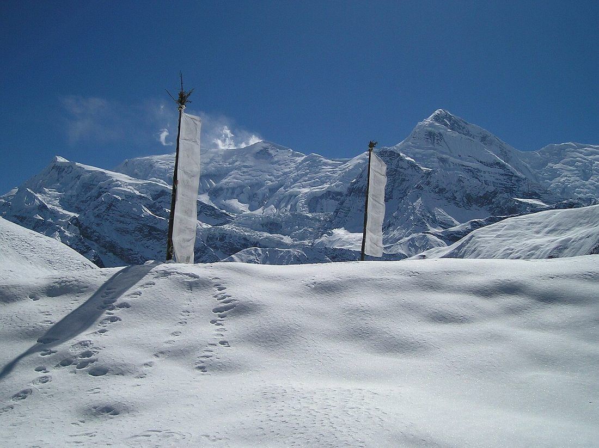

Understanding the Sacred Art of the Thangka
Himalayan Brushwork is an independent guide to the traditional painted scrolls of Tibet, Nepal, and the wider Himalaya. Thangkas are among the most intricate religious artworks in the world: cotton canvases prepared by hand, drawn to sacred proportions, painted with mineral colors and gold, and mounted in silk brocade. We write for collectors, students, practitioners, and anyone who has stood in front of one and wanted to know more.

What You Will Find Here
Our articles explain how a thangka canvas is prepared, what the symbols in a mandala mean, how to read a refuge tree, how embroidered and appliqué thangkas are made, and how to care for a painting once it hangs in your home. Everything is written in plain English, with practical tips you can use when you look at, buy, or live with a thangka.
A Living Tradition
Thangka painting is not only a historical art. Workshops in the Kathmandu Valley, in Tibetan communities, and across the Himalaya still train painters in the same careful methods used for centuries. Every painting begins with a measured drawing and ends, traditionally, with the opening of the eyes. We hope our guides help you see that patience in every brushstroke.

Start Exploring
Use the menu above to read about the resources we offer, learn more about our approach, or browse the blog, where our in-depth guides are collected in one place.